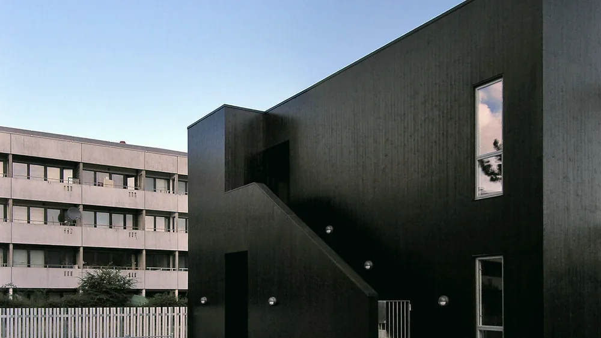

Leistung
Energieausweis für Nichtwohngebäude
Ab 2027 gilt für Nichtwohngebäude der Bedarfsausweis – Verbrauchsausweise sind dann nicht mehr zulässig. Wir erstellen die Bilanzierung nach DIN V 18599.
Das Wichtigste zuerst
Der Verbrauchsausweis läuft aus
Bislang konnten viele Nichtwohngebäude ihren Energieausweis auf Basis der reinen Verbrauchsdaten erstellen lassen – schnell und günstig, aber wenig aussagekräftig, weil das Nutzerverhalten das Ergebnis dominiert.
Mit dem Gebäudemodernisierungsgesetz ist damit Schluss: Ab dem 1. Januar 2027 sind Verbrauchsausweise für Nichtwohngebäude nicht mehr zulässig. Erforderlich ist dann eine energetische Bilanzierung – der Bedarfsausweis. Neu sind außerdem Effizienzklassen auf Basis des Primärenergiereferenzfaktors.
Das ist mehr Aufwand, aber auch mehr wert: Ein Bedarfsausweis zeigt, wo das Gebäude Energie verliert – und ist damit die halbe Sanierungsplanung.
Ausweis anfragen
Unterschied
Bedarfsausweis und Verbrauchsausweis im Vergleich
| Kriterium | Bedarfsausweis | Verbrauchsausweis |
|---|---|---|
| Grundlage | Berechnete Bilanz nach DIN V 18599 | Abrechnungen der letzten Jahre |
| Einfluss der Nutzung | Neutralisiert – normierte Randbedingungen | Hoch – Ergebnis schwankt mit dem Verhalten |
| Aussage zur Substanz | Zeigt Schwachstellen von Hülle und Technik | Zeigt nur die Summe |
| Aufwand | Höher – Aufnahme von Gebäude und Anlagen | Gering |
| Für Nichtwohngebäude ab 2027 | Pflicht | Nicht mehr zulässig |
Stand: August 2026 · Grundlage: Gebäudemodernisierungsgesetz (GModG)
Häufige Fragen
Energieausweis kurz erklärt
Brauchen wir einen Bedarfs- oder einen Verbrauchsausweis?
Für Nichtwohngebäude ist die Frage seit dem GModG entschieden: Ab dem 1. Januar 2027 sind Verbrauchsausweise für Nichtwohngebäude nicht mehr zulässig. Energieausweise müssen dann auf einer energetischen Bilanzierung beruhen – also als Bedarfsausweis erstellt werden.
Wann brauche ich überhaupt einen Energieausweis?
Immer bei Verkauf, Neuvermietung oder Verpachtung – der Ausweis muss Interessenten unaufgefordert vorgelegt werden. Bei Gebäuden mit starkem Publikumsverkehr besteht zusätzlich eine Aushangpflicht. Auch für Neubau und größere Sanierungen sind Nachweise nötig.
Wie lange ist ein Energieausweis gültig?
Zehn Jahre ab Ausstellung. Wird das Gebäude zwischenzeitlich wesentlich saniert, lohnt sich eine Neuausstellung meist früher – die bessere Effizienzklasse wirkt direkt auf Miete, Verkaufspreis und Finanzierungskonditionen.
Was kostet ein Bedarfsausweis für ein Nichtwohngebäude?
Deutlich mehr als bei einem Wohnhaus, weil die Bilanzierung nach DIN V 18599 Gebäudehülle, Anlagentechnik, Zonierung und Nutzungsprofile abbildet. Der Aufwand hängt von Größe und Zonenvielfalt ab. Sinnvoll ist, den Ausweis gleich mit einer Energieberatung zu verbinden: Die Datenaufnahme fällt dann nur einmal an.
Energieausweis nach neuem Recht?
Wir erstellen die Bilanzierung nach DIN V 18599 – und sagen Ihnen gleich, welche Maßnahmen die Effizienzklasse am günstigsten verbessern.